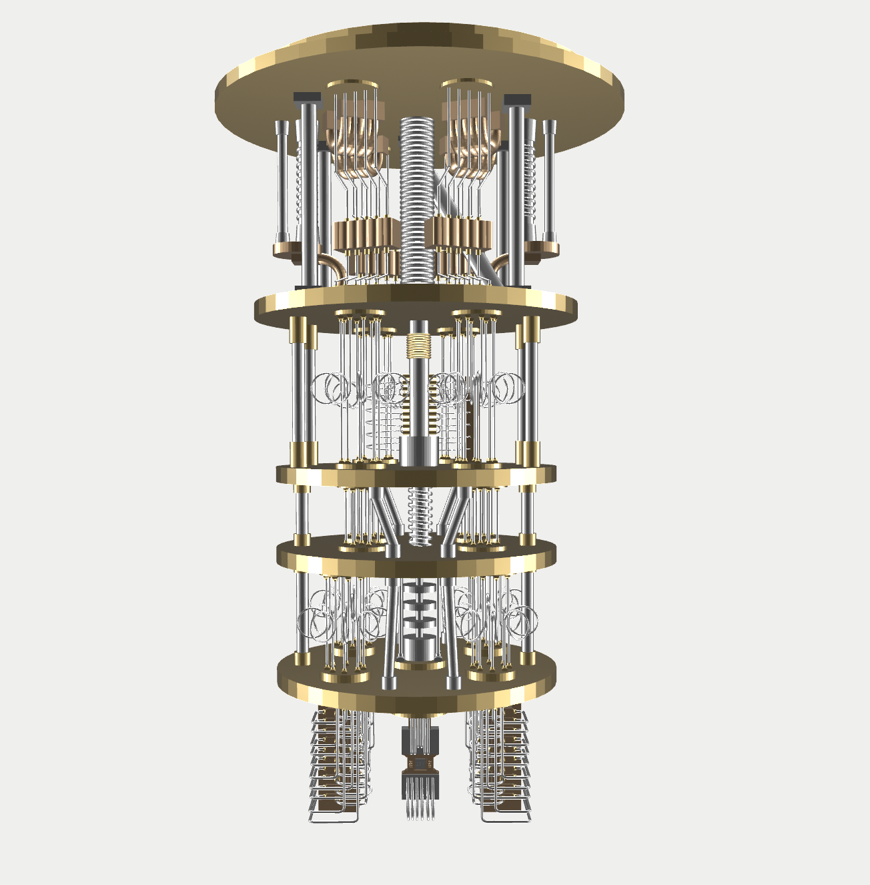
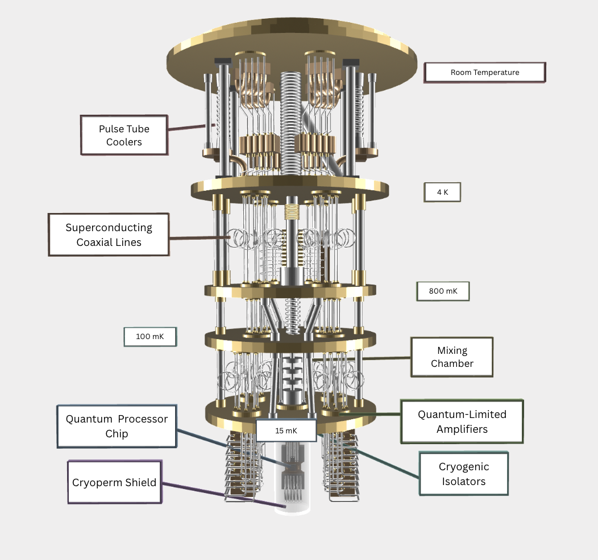

Models
In order to help you visualize an actual quantum computer, I have created two 3D models of a quantum computer, which are included below. Both of the models are mostly based off of IBM's System One Quantum Computer, but also includes other elements and is not an exact copy. The first model just shows the quantum computer, while the second model also includes labels of different parts of the dilution refrigerator. The images included here are only screenshots, and if you would like to access the actual 3D models, just email me! Have fun!
Notes: Both models are not completely accurate, and should not be used for precise scientific creations. Additionally, the first model does not include the cryoperm shield in order to give the best views of the quantum processor. Both models do not include the cryogenic isolators that should be on the last level of the dilution refrigerator. The labels pointing to the cryogenic isolators and quantum-limited amplifiers in the second model are slightly off the actual positions.
Model 1 (Without Labels)

Model 2 (With Labels)

Description of Quantum Computer Parts
- Pulse Tube Coolers: Located in the first level of the dilution refrigerator, the pulse tube coolers start the first step of cooling, extracting heat to cool this level to 4 Kelvin.
- Superconducting Coaxial Lines: These wires are designed to minimize interference, energy loss, and transmit high frequency signals. As a result, they are used in the quantum computer to carry the microwave input and output signals.
- Mixing Chamber: Located in the second to last level of the dilution refrigerator, the mixing chamber helps cool the quantum computer down to 15 millikelvin, which is much colder than outer space!
- Cryogenic Isolators: These components help minimize noise from getting to the qubits in order to avoid decoherence. The Cryogenic Isolators are located on the sides of the quantum processor.
- Quantum-Limited Amplifiers: The quantum limited amplifiers are the long prisms at the bottom of the dilution refrigerator, and amplify the output signals while minimizing noise.
- Quantum Processor Chip: This is the actual computer inside the dilution refrigerator, and is what contains the superconducting qubits.
- Cryoperm Shield: A shield that protects the quantum processor from electromagnetic interference in order to preserve the reliability of the qubits.